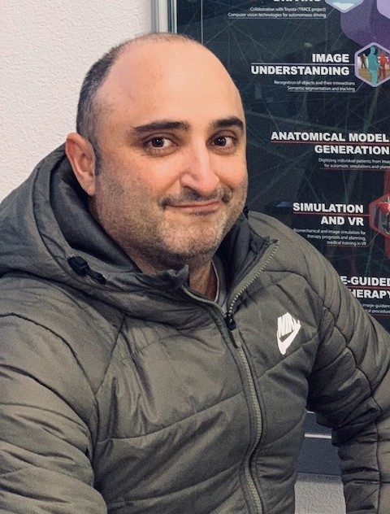
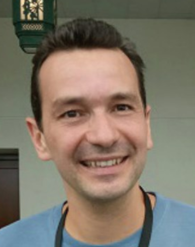

Abstract
This paper presents an uncalibrated deep neural network framework for the photometric stereo problem. For training models to solve the problem, existing neural network-based methods either require exact light directions or ground-truth surface normals of the object or both. However, in practice, it is challenging to procure both of this information precisely, which restricts the broader adoption of photometric stereo algorithms for vision application. To bypass this difficulty, we propose an uncalibrated neural inverse rendering approach to this problem. Our method first estimates the light directions from the input images and then optimizes an image reconstruction loss to calculate the surface normals, bidirectional reflectance distribution function value, and depth. Additionally, our formulation explicitly models the concave and convex parts of a complex surface to consider the effects of interreflections in the image formation process. Extensive evaluation of the proposed method on the challenging subjects generally shows comparable or better results than the supervised and classical approaches.
Dataset Acquisition Setup and Statistical Comparison
Video Presentation (Presently the audio works well on Chrome.)
Authors
Berk Kaya
Suryansh Kumar

Carlos Oliveira

Vittorio Ferrari
Luc Van Gool
Acknowledgements
This work was funded by Focused Research Award from Google(CVL, ETH 2019-HE-318, 2019-HE-323). Authors thank Vincent Vanweddingen from KU Lueven for providing some of the datasets for our experiments. Suryansh Kumar's project is supported by "ETH Zurich Foundation and Google, Project Number: 2019-HE-323" for bringing together best academic and industrial research.